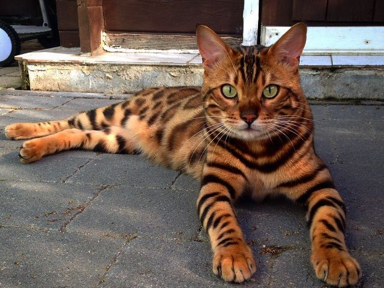
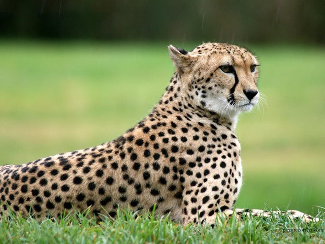
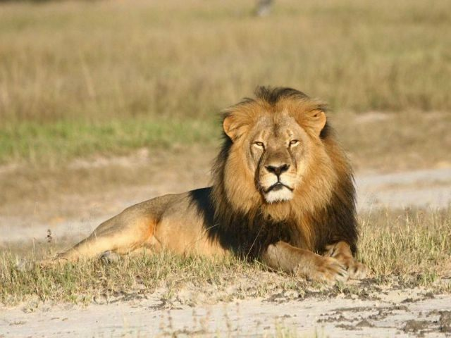

Bengal Cat
The Bengal cat is a domesticated cat breed created from hybrids of domestic cats, especially the spotted Egyptian Mau, with the Asian leopard cat (Prionailurus bengalensis). The breed name comes from the leopard cat's taxonomic name.
- Scientific Name: Prionailurus Bengalensis
- Average Length: 14 to 18 inches
- Average Weight: 8 to 16 lbs.
- Average Lifespan: 12 to 16 years
- Habitat: Domestic
Bengals have a wild appearance; their golden shimmer comes from their leopard cat ancestry, and their coats may show spots, rosettes, arrowhead markings, or marbling. They are an energetic breed which needs much exercise and play.
Tiger

The tiger is the largest living cat species and a member of the genus Panthera. An apex predator, it primarily preys on ungulates such as deer and wild boar. It is territorial and generally a solitary but social predator, requiring large contiguous areas of habitat, which support its requirements for prey and rearing of its offspring.
- Scientific Name: Panthera Tigris
- Average Length: 8.2 to 13 ft.
- Average Weight: 200 to 680 lbs.
- Average Lifespan: 8 to 10 years
- Habitat: Rain Forests and Grasslands
Tigers are most recognisable for their dark vertical stripes on orange fur with a white underside.
Cheetah
The cheetah is a large cat native to Africa and central Iran. It is the fastest land animal, estimated to be capable of running at 50 to 80 mph and as such has several adaptations for speed, including a light build, long thin legs and a long tail.
- Scientific Name: Acinonyx Jubatus
- Average Length: 3.6 to 4.9 ft.
- Average Weight: 46 to 160 lbs.
- Average Lifespan: 10 to 12 years
- Habitat: African Sahara
The cheetah's head is small and rounded, and has a short snout and black tear-like facial streaks. The coat is typically tawny to creamy white or pale buff and is mostly covered with evenly spaced, solid black spots.
Lion
The lion is a large cat of the genus Panthera native to Africa and India. It is a social species, forming groups called prides. A lion's pride consists of a few adult males, related females, and cubs. Groups of female lions usually hunt together, preying mostly on large ungulates. The lion is an apex and keystone predator.
- Scientific Name: Panthera Leo
- Average Length: 5.6 to 8.3 ft.
- Average Weight: 330 to 550 lbs.
- Average Lifespan: 10 to 16 years
- Habitat: African Sahara
The lion has a muscular, deep-chested body, short, rounded head, round ears, and a hairy tuft at the end of its tail.